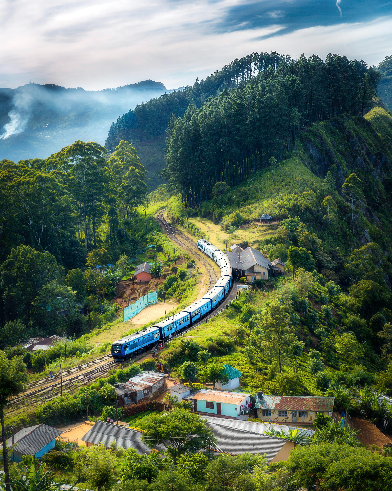
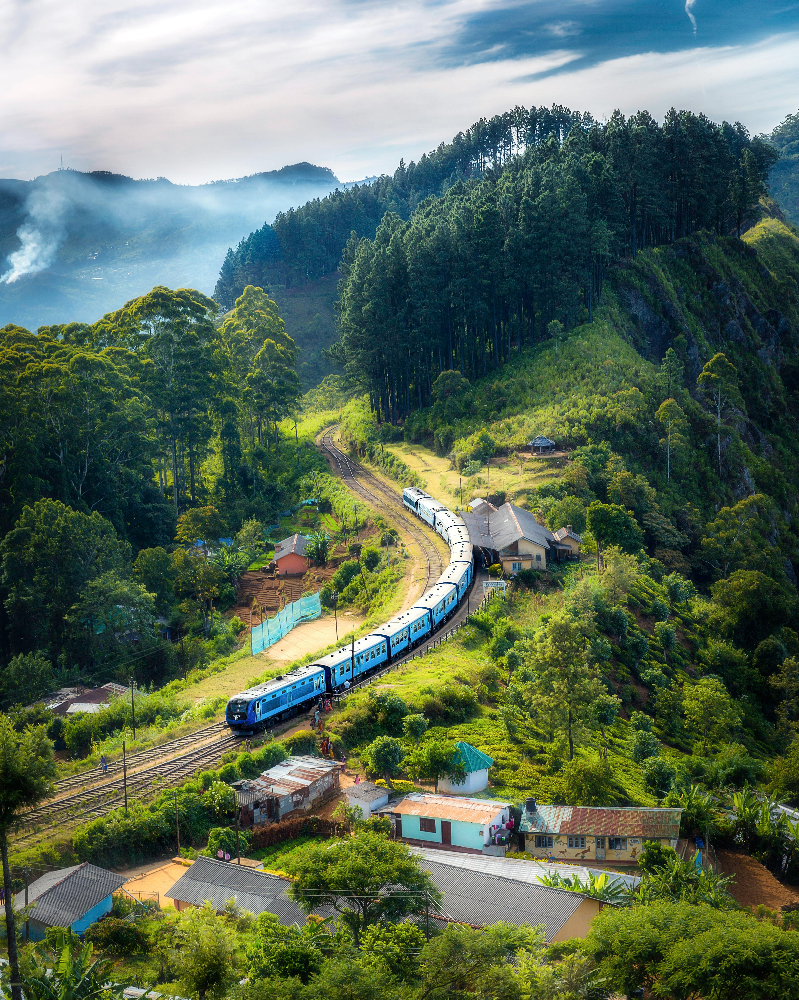

WEATHER EMERGENCY GUIDE
WEATHER EMERGENCY GUIDE.

üåü Advertise Here
Reach thousands of travelers exploring Sri Lanka every day.
@everything_lanka.wikiCheck if you have all the items needed to be packed for travelling
Check Now
WEATHER EMERGENCY GUIDE.

Details about visa and passport in relation to Sri Lanka

Can you travel in Sri Lanka with your kids in 2025

Here are the stats of Sri Lanka relating to 2025 GPD AND ECONOMIC GROWTH

A guide to the bus trip from Colombo to Ella.

Take look into the best guide on Nine Arch Bridge, train shedule and Ella.

Any one can understand this simplified version of the Sri Lankan budget.

THE BEST way to travel to ELLA is this!.

Here they are top 10 destination for you, yeah YOU!.
Sponsor a Section
Feature your brand alongside Sri Lanka’s top travel stories.
@everything_lanka.wiki
Ultimate 10-Day Sri Lanka Itinerary.
Former President of Sri Lanka Arrested. Here are all the charges against him.
It looks like LAnkan couples might be in trouble. Check if you have these problems.

Here is the full on guide for LANKAQR for tourist

Sri Lanka is better than India?

Check this out before visiting ELLA

You have to take these items if you are going to ELLA

BYDs are trending in Sri Lanka and here is the reason.

You did not know how to buy train tickets in Sri Lanka until now.

Here is the best mobile network coverage guide and plan for Sri Lanka 2025.

So is it truly safe to travel in Sri Lanka 2025.

What is the the best E-Commerce platform available for Sri Lanka in terms of prices.

Is the Sri Lankan Economy Failing or Growing?.

Here are the top 7 districts you must visit in Sri Lanka. Check out if your district is here too.
Temu and Ali Express go head to head to be decided which is the best for a Sri Lankan..

Here is the best time for visiting Ella for phototgraphy.

A full on guide which explains to you on how you can rent a tuk tuk in Sri Lanka, the lincense need and more.

Essentials to be aware of if you are travelling in Colombo by Tuk Tuk.

Emergency medical ambulance numbers in Sri Lanka for medical emergencies.
SL vs BAN 3rd ODI 2025: Full Scorecard, Highlights & Series-End Analysis.

Here is the breakdown of the newly integrated tax on items purchased from Ali Express & Temu .
Join an organic cooking class in Sigiriya and savor authentic Sri Lankan flavors!
Book Now 
